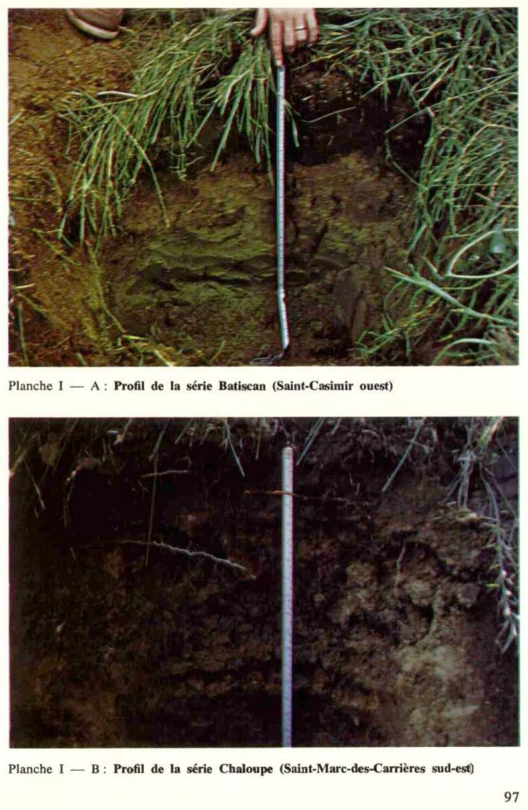

Identification & Caractéristiques Générales
Les sols de la série de Chaloupe se sont développés sur un dépôt de texture limoneuse fine, d'une épaisseur variant généralement de 50 à 90 cm, déposé en placage sur un matériau sous-jacent de texture loameuse grossière ou sableuse fine. Ce matériau parental trouve son origine dans des alluvions fluviatiles ou des sédiments associés aux retraits des plans d'eau quaternaires et aux dynamiques littorales. Géomorphologiquement, ces sols occupent les basses terres, les premières terrasses ainsi que les levées alluviales de faible altitude, notamment le long du fleuve Saint-Laurent et de ses affluents. La topographie associée est généralement plane à doucement ondulée, caractérisée par des pentes simples ou complexes variant de 1 à 5 %.
Le profil pédologique est profond, le solum atteignant 60 à 80 cm, et présente une pierrosité de surface généralement nulle, bien que le contenu en fragments grossiers puisse localement varier de 1 à 10 %. Morphologiquement, la couche de surface (horizon Ap) est constituée d'un loam, d'un loam limoneux ou d'un loam limono-argileux friable, d'une réaction variant de faiblement acide à neutre. La dynamique hydropédologique est caractérisée par un mauvais drainage naturel, entrainant l'apparition de traits gleyfiés (marques d'oxydoréduction) entre 20 et 30 cm de profondeur. Le sous-sol (horizon Bg) et le substratum sous-jacent (horizon IICg) montrent des textures stratifiées de loam limoneux, de loam sableux fin ou de sable fin loameux, dont la réaction oscille entre neutre et faiblement alcaline, la profondeur des carbonates libres étant généralement supérieure à 120 cm.
Du point de vue agronomique, ces sols conviennent aux grandes cultures et aux cultures maraîchères, bien que leur utilisation soit restreinte par des limitations majeures liées à l'excès d'eau, au mauvais drainage naturel et aux risques d'inondations printanières périodiques. La mise en valeur agricole de cette série requiert obligatoirement l'installation d'un réseau de drainage souterrain adéquat pour abaisser la nappe perchée temporaire. De plus, la gestion de ces terres nécessite un apport régulier d'amendements calcaires et d'engrais minéraux pour corriger l'acidité et soutenir la fertilité chimique, ainsi qu'une attention particulière lors du travail du sol afin d'éviter la compaction des horizons superficiels et sous-superficiels.
Classification Taxonomique & Environnement Pédologique
| Ordre Pédologique | Gleysolique |
|---|---|
| Grand Groupe (SCSS) | Gleysol humique |
| Sous-Groupe Taxonomique | Gleysol humique orthique |
| Famille Pédologique | Loameuse-grossière, mixte sableux, neutre |
| Mode de Dépôt Parental | Alluvion récente |
| Classe de Drainage Naturel | Imparfaitement drainé |
| Régime Thermique & Humidité | Frais / Perhumide |
Description Morphologique du Profil Type
Séquences génétiques des horizons pédologiques caractérisant le profil type représentatif de la série Chaloupe :
Profil cultivé (agricole) — Comté de Chambly
✓ Source : Comté de Chambly — Page 34Couleur Munsell : 10YR 3/2
Structure & Consistance : Polyédrique à granulaire
Description morphologique : Loam; brun grisâtre très foncé (10YR 3/2); massif; consistance très friable; modérément poreux; limite nette, ondulée; réaction neutre.
Couleur Munsell : 2.5Y 4/2 (matrice), 10YR 4/6 (marbrures)
Structure & Consistance : Granulaire
Description morphologique : Loam; brun grisâtre foncé (2.5Y 4/2); marbrures brun jaunâtre foncé (10YR 4/6), rares, fines, marquées; structure granulaire, fine, modérément à fortement développée; consistance très friable; modérément poreux; limite nette, ondulée; réaction neutre.
Couleur Munsell : 7.5YR 3/4
Structure & Consistance : Granulaire
Description morphologique : Loam; brun grisâtre très foncé à brun grisâtre foncé (2.5Y 3,5/2); marbrures brun foncé (7.5YR 3/4), nombreuses, moyennes, marquées; structure granulaire, fine, modérément développée; consistance très friable; modérément poreux; limite abrupte; régulière; réaction faiblement alcaline.
Couleur Munsell : 2.5Y 4/2 (matrice), 10YR 4/6 (marbrures)
Structure & Consistance : Polyédrique subangulaire
Description morphologique : Loam; brun grisâtre foncé (2.5Y 4/2); marbrures brun jaunâtre foncé (10YR 4/6), nombreuses, fines, marquées; structure polyédrique subangulaire, fine, faiblement à modérément développée; consistance très friable; modérément poreux; limite nette, régulière; réaction faiblement alcaline.
Couleur Munsell : 2.5Y 3/2 (matrice), 10YR 4/6 (marbrures)
Structure & Consistance : Polyédrique à granulaire
Description morphologique : Loam sableux fin; brun grisâtre très foncé (2.5Y 3/2); marbrures brun jaunâtre foncé (10YR 4/6), nombreuses, grossières, marquées; particulaire; consistance meuble; peu poreux; limite graduelle, régulière; réaction faiblement alcaline.
Couleur Munsell : 10YR 5/6
Structure & Consistance : Polyédrique à granulaire
Description morphologique : Loam sableux fin; gris très foncé à gris foncé (10YR 3,5/1); marbrures brun jaunâtre (10YR 5/6), nombreuses, moyennes, marquées; particulaire; consistance meuble; peu poreux; réaction faiblement alcaline.
Profil cultivé (agricole) — Comté de Champlain
✓ Source : Comté de Champlain — Page 19Couleur Munsell : 10YR 5/3, 10YR 4/3
Structure & Consistance : Granulaire
Description morphologique : Loam limoneux brun (10YR 5/3) à brun foncé (10YR 4/3); assez bien pourvu en matière organique; structure granulaire; pH : 5.0—5.4.
Couleur Munsell : 10YR 6/2, 10YR 5/6
Structure & Consistance : Feuilletée
Description morphologique : Loam sableux gris brun clair (10YR 6/2); taches brun rouille (10YR 5/6); structure feuilletée.
Couleur Munsell : 5Y 6/2
Structure & Consistance : Feuilletée
Description morphologique : Loam sableux gris olive clair (5Y 6/2); nombreuses taches de rouille; structure feuilletée; pH : 5.6.
Profil représentatif — Comté de Maskinongé
✓ Source : Comté de Maskinongé — Page 23Couleur Munsell : 5YR 3/2, 10YR 3/2
Structure & Consistance : Granulaire
Description morphologique : Loam sableux brun rouge foncé (5YR 3/2) et brun gris très foncé (10YR 3/2) à l'état humide. Structure granulaire, consistance friable. pH : 5.7 à 6.2.
Couleur Munsell : 10YR 6/3 (matrice), 10YR 7/1 (marbrures)
Structure & Consistance : Feuilletée
Description morphologique : Loam sableux, moucheté de rouille (10YR 6/3) sur fond gris clair (10YR 7/1) avec traînées blanchâtres, diminuant d'intensité en profondeur. Structure feuilletée, consistance légèrement compacte. pH : 6.0-6.4.
Couleur Munsell : 2.5Y 5/4
Structure & Consistance : Feuilletée en lamelles plus épaisses
Description morphologique : Loam sableux, plus pâle que l'horizon supérieur, olive clair à l'état humide (2.5Y 5/4). Beaucoup de taches de rouille. Structure feuilletée en lamelles plus épaisses. pH : 6.5.
Couleur Munsell : 10YR 7/1, 2.5Y 6/2
Structure & Consistance : Grossièrement feuilletée
Description morphologique : Loam sableux à argileux, gris clair (10YR 7/1) à gris brun clair (2.5Y 6/2). Structure grossièrement feuilletée, consistance compacte, présence de nodules argileux. pH : 6.6.
Profil cultivé (agricole) — Comté de Portneuf
✓ Source : Comté de Portneuf — Page 43Couleur Munsell : 10YR 2/2, 10YR 4/2
Structure & Consistance : Polyédrique à granulaire
Description morphologique : Loam brun très foncé (10YR 2/2 h), brun-gris foncé (10YR 4/2 s) ; granulaire, moyenne, modérée ; très friable ; racines abondantes, fines à microscopiques, verticales, endo-agrégats ; limite distincte, régulière ; pH : 6.3.
Couleur Munsell : 10YR 5/4, 7.5YR 5/6, 10YR 6/3, 5Y 6/4
Structure & Consistance : Polyédrique à granulaire
Description morphologique : Loam limoneux brun-jaune (10YR 5/4 h), brun pâle à olive pâle (10YR 6/3 à 5Y 6/4 s) ; taches brun vif (7.5YR 5/6) nombreuses, moyennes, distinctes ; lamellaire, fine, faible ; très friable ; racines très peu abondantes, très fines et microscopiques, verticales, endo-agrégats ; limite graduelle, régulière ; pH : 6.5.
Couleur Munsell : 5Y 6/2, 5YR 4/8, 10YR 6/3, 5Y 6/3
Structure & Consistance : Polyédrique à granulaire
Description morphologique : Loam limoneux gris-olive clair (5Y 6/2 h), brun pâle à olive pâle (10YR 6/3 à 5Y 6/3 s) ; taches rouge-jaune (5YR 4/8 h) nombreuses, moyennes, très marquées ; lamellaire, grossière, forte ; friable ; pH : 6.7.
Profil cultivé (agricole) — Comté de Portneuf
✓ Source : Comté de Portneuf — Page 44Couleur Munsell : 10YR 3/2, 10YR 6/1
Structure & Consistance : Polyédrique à granulaire
Description morphologique : Loam limoneux brun-gris très foncé (10YR 3/2 h), gris (10YR 6/1 s) ; polyédrique sub-angulaire, grossière, très faible ; très friable ; racines très abondantes, fines à microscopiques, verticales, exo-agrégats ; limite abrupte, régulière ; pH : 7.3.
Couleur Munsell : 10YR 4/1, 2.5Y 6/2, 10YR 4/4
Structure & Consistance : Polyédrique à granulaire
Description morphologique : Loam limoneux gris foncé (10YR 4/1 h), gris-brun clair (2.5Y 6/2 s) ; taches brun-jaune foncé (10YR 4/4 h) nombreuses, petites, très marquées ; polyédrique sub-angulaire, moyenne, très faible ; friable ; racines peu abondantes, fines à microscopiques, verticales, exo-agrégats ; limite abrupte, régulière ; pH : 7.4.
Couleur Munsell : 10YR 5/1, 2.5Y 6/2, 10YR 4/4
Structure & Consistance : Polyédrique à granulaire
Description morphologique : Loam sablo-argileux gris (10YR 5/1 h), gris-brun clair (2.5Y 6/2 s) ; taches brun-jaune foncé (10YR 4/4 h) peu nombreuses, petites, très marquées ; polyédrique sub-angulaire, moyenne, très faible ; friable ; racines peu abondantes, microscopiques, verticales, exo-agrégats ; limite distincte, régulière ; pH : 7.3.
Couleur Munsell : 10YR 4/1, 2.5Y 7/2
Structure & Consistance : Polyédrique à granulaire
Description morphologique : Loam sableux fin gris foncé (10YR 4/1 h), gris clair (2.5Y 7/2 s) ; taches peu nombreuses, petites, faibles ; massive ; friable ; racines peu abondantes, microscopiques, verticales, exo-agrégats ; pH : 7.6.
Couleur Munsell : Non précisée
Structure & Consistance : Polyédrique à granulaire
Description morphologique : Roches composées de schistes Utica-Lorraine.
Profil représentatif — Comté de Trois-rivières
✓ Source : Comté de Trois-rivières — Page 24Couleur Munsell : 2.5Y 6/2
Structure & Consistance : Granulaire
Description morphologique : Loam à loam sableux, structure granulaire, gris brun clair (2.5Y 6/2), friable; pH : 5.2.
Couleur Munsell : 2.5YR 3/6, 10YR 5/4, 2.5Y 7/2
Structure & Consistance : Feuilletée
Description morphologique : Loam sableux, structure feuilletée, rouge foncé (2.5YR 3/6), à brun jaune (10YR 5/4) avec taches de couleur gris clair (2.5Y 7/2), friable; pH : 5.7 — 5.9.
Couleur Munsell : 2.5Y 7/2 (matrice), 10YR 4/4 (marbrures)
Structure & Consistance : Grossièrement feuilletée
Description morphologique : Sable à sable loameux, structure grossièrement feuilletée, gris clair (2.5Y 7/2), avec mouchetures de rouille de couleur brun jaune foncé (10YR 4/4); pH : 6.0 — 6.5.
Profil représentatif — Comté de Berthier
✓ Source : Comté de Berthier — Page 42Couleur Munsell : 7.5YR 5/4, 5YR 5/2, 10YR 3/2
Structure & Consistance : Granulaire
Description morphologique : Loam limoneux brun (7.5 YR 5/4) à brun rouge foncé (5 YR 5/2) et brun gris très foncé (10 YR 3/2) à l'état humide. Structure granulaire, consistance friable. pH: 5.8 à 6.2.
Couleur Munsell : 10YR 6/3 (matrice), 5YR 4/6 (marbrures)
Structure & Consistance : Feuilletée
Description morphologique : Loam limoneux, moucheté de rouille (10 YR 6/3) parfois rouge, jaune (5 YR 4/6) sur fond gris clair (10 YR 7/1) avec trainées blanchâtres, diminuant d'intensité en profondeur. Structure feuilletée. pH: 6.0.
Couleur Munsell : Non précisée
Structure & Consistance : Feuilletée en lamelles plus épaisses et grossières que celle de bg
Description morphologique : Loam limoneux à loam sableux de teinte plus pâle que l'horizon supérieur. Structure feuilletée en lamelles plus épaisses et grossières que celle de Bg. pH: 6.4 (variable)
Couleur Munsell : 10YR 7/1 (matrice), 10YR 6/3 (marbrures)
Structure & Consistance : Parfois grossièrement feuilletée
Description morphologique : Sable à sable loameux très fin, gris clair (10 YR 7/1) avec taches de mouchetures rouilles, brun pâle (10 YR 6/3). Structure parfois grossièrement feuilletée, consistance assez compacte. pH: 6.6 à 7.0.
Profil cultivé (agricole) — Comté de Verchères
✓ Source : Comté de Verchères — Page 144Couleur Munsell : 10YR 3/2
Structure & Consistance : Polyédrique à granulaire
Description morphologique : Loam; brun grisâtre très foncé (10YR 3/2); massif; consistance très friable; modérément poreux; limite nette, ondulée; réaction neutre.
Couleur Munsell : 2.5Y 4/2 (matrice), 10YR 4/6 (marbrures)
Structure & Consistance : Granulaire
Description morphologique : Loam; brun grisâtre foncé (2.5Y 4/2); marbrures brun jaunâtre foncé (10YR 4/6), rares, fines, marquées; structure granulaire, fine, modérément à fortement développée; consistance très friable; modérément poreux; limite nette, ondulée; réaction neutre.
Couleur Munsell : 7.5YR 3/4
Structure & Consistance : Granulaire
Description morphologique : Loam; brun grisâtre très foncé à brun grisâtre foncé (2.5Y 3,5/2); marbrures brun foncé (7.5YR 3/4), nombreuses, moyennes, marquées; structure granulaire, fine, modérément développée; consistance très friable; modérément poreux; limite abrupte; régulière; réaction faiblement alcaline.
Couleur Munsell : 2.5Y 4/2 (matrice), 10YR 4/6 (marbrures)
Structure & Consistance : Polyédrique subangulaire
Description morphologique : Loam; brun grisâtre foncé (2.5Y 4/2); marbrures brun jaunâtre foncé (10YR 4/6), nombreuses, fines, marquées; structure polyédrique subangulaire, fine, faiblement à modérément développée; consistance très friable; modérément poreux; limite nette, régulière; réaction faiblement alcaline.
Couleur Munsell : 5Y 3/2 (matrice), 10YR 4/6 (marbrures)
Structure & Consistance : Polyédrique à granulaire
Description morphologique : Loam sableux fin; brun grisâtre très foncé (2,5Y 3/2); marbrures brun jaunâtre foncé (10YR 4/6), nombreuses, grossières, marquées; particulaire; consistance meuble; peu poreux; limite graduelle, régulière; réaction faiblement alcaline.
Couleur Munsell : 10YR 5/6
Structure & Consistance : Polyédrique à granulaire
Description morphologique : Loam sableux fin; gris très foncé à gris foncé (10YR 3,5/1); marbrures brun jaunâtre (10YR 5/6), nombreuses, moyennes, marquées; particulaire; consistance meuble; peu poreux; réaction faiblement alcaline.
Profil cultivé (agricole) — Comté de Québec
✓ Source : Comté de Québec — Page 20Couleur Munsell : 10YR 3/2
Structure & Consistance : Polyédrique à granulaire
Description morphologique : Loam limoneux brun-gris très foncé (10YR 3/2 h), gris (10YR6/1 s); polyédrique subangulaire, grossière, très faible; très friable; racines très abondantes, fines à microscopiques, verticales, exo-agrégats; limite abrupte, régulière; épaisseur de 17 à 22 cm; pH : 7.3.
Couleur Munsell : 10YR 4/1, 2.5Y 6/2, 10YR 4/4
Structure & Consistance : Polyédrique à granulaire
Description morphologique : Loam limoneux gris foncé (10YR 4/1 h), gris-brun clair (2.5Y 6/2 s); taches brun-jaune foncé (10YR 4/4 h), nombreuses, petites, très marquées; polyédrique subangulaire, moyenne, très faible; friable; racines peu abondantes, fines à microscopiques, verticales, exo-agrégats; limite abrupte, régulière; épaisseur de 8 à 12 cm; pH : 7.4.
Couleur Munsell : 10YR 5/1, 2.5Y 6/2, 10YR 4/4
Structure & Consistance : Polyédrique à granulaire
Description morphologique : Loam sablo-argileux gris (10YR 5/1 h), gris-brun clair (2.5Y 6/2 s); taches brun-jaune foncé (10YR 4/4 h) peu nombreuses, petites, très marquées; polyédrique subangulaire, moyenne, très faible; friable; racines peu abondantes, microscopiques, verticales, exo-agrégats; limite distincte, régulière; épaisseur de 12 à 16 cm; pH : 7.3.
Couleur Munsell : 10YR 4/1
Structure & Consistance : Polyédrique à granulaire
Description morphologique : Loam sableux fin gris foncé (10YR 4/1 h), gris clair (2.5Y7/2 s); taches peu nombreuses, petites, faiblesses; friable; racines peu abondantes, microscopiques, verticales, exo-agrégats; épaisseur de 16 à 40cm; pH : 7.6.
Couleur Munsell : Non précisée
Structure & Consistance : Polyédrique à granulaire
Description morphologique : Roches composées de schistes Utica-Lorraine.
Profils Photographiques & Planches de Terrain
Documents iconographiques, figures pédologiques et coupes de terrain documentées dans les mémoires d'inventaire pour de la série Chaloupe :

Propriétés Physico-Chimiques & Analyses de Laboratoire
| Horizon | Prof. limite | pH (H₂O) | M.O. % | C tot. % | N tot. % | C.E.C. (cmol/kg) | Sable % | Limon % | Argile % | P Meh3 (mg/kg) | K (cmol/kg) | Ca (cmol/kg) | MVA (g/cm³) |
|---|---|---|---|---|---|---|---|---|---|---|---|---|---|
| Ap1 | 11.0 cm | 6.48 | 4.87 | 2.83 | 0.21 | 18.7 | 21.8 | 56.4 | 21.8 | 87.4 | 0.32 | 10.07 | 1.05 |
| Ap2 | 29.0 cm | 6.38 | 4.49 | 2.6 | 0.19 | 18.3 | 21.1 | 58.4 | 20.5 | 73.9 | 0.26 | 9.71 | 1.21 |
| B | — | 6.38 | 3.97 | 2.3 | 0.16 | 17.2 | 21.7 | 57.5 | 20.8 | 60.9 | 0.2 | 8.86 | 1.34 |
Particularités Régionales, Phases & Variantes Pédologiques
Déclinaisons régionales, faciès texturaux, phases d'érosion ou de pierrosité et variantes cartographiées par étude pour de la série Chaloupe :
| Étude Régionale | Symbole | Appellation / Phase / Variante | Différenciation avec la série type (Analyse pédologique) |
|---|---|---|---|
| Comté de Berthier | Ce |
Chaloupe loam limoneux | Modalité modale de référence (type de base de la série). |
| Comté de Chambly | CE3 |
Chaloupe loam | Faciès textural de surface loam (distinct du loam limoneux de référence). |
CE3bp |
Chaloupe loam 3-8 % de pente pierreux | Phase pierreuse (abondance de cailloux et blocs en surface); Faciès textural de surface loam (distinct du loam limoneux de référence). | |
CE3p |
Chaloupe loam sableux très fin pierreux | Phase pierreuse (abondance de cailloux et blocs en surface); Faciès sableux très filtrant et pauvre en éléments nutritifs vis-à-vis du loam limoneux de référence. | |
| Comté de Champlain | Ce |
Chaloupe loam limoneux | Conforme à la série type de référence (caractéristiques texturales et drainage identiques). |
| Comté de Maskinongé | Ce |
Chaloupe loam sableux | Faciès sableux très filtrant et pauvre en éléments nutritifs vis-à-vis du loam limoneux de référence. |
| Comté de Portneuf | Ce |
Chaloupe loam à loam limoneux | Conforme à la série type de référence (caractéristiques texturales et drainage identiques). |
Ce-a |
Chaloupe loam argileux | Faciès argileux plus lourd et compact que le loam limoneux de référence. | |
| Comté de Québec | Ce |
Chaloupe loam | Faciès textural de surface loam (distinct du loam limoneux de référence). |
Ce-l |
Chaloupe de texture plus légère ou plus fine que normal | Faciès textural de surface loam (distinct du loam limoneux de référence). | |
Ce-lo |
Chaloupe de texture plus lourde que normal | Conforme à la série type de référence (caractéristiques texturales et drainage identiques). | |
| Comté de Richelieu | CE3 |
Chaloupe loam | Faciès textural de surface loam (distinct du loam limoneux de référence). |
| Comté de Trois-rivières | Ce |
Chaloupe loam | Faciès textural de surface loam (distinct du loam limoneux de référence). |
| Comté de Verchères | CE3b |
Chaloupe loam 3-8 % de pente | Faciès textural de surface loam (distinct du loam limoneux de référence). |
Distribution Pédo-Paysagère & Représentativité Cartographique (Couverture PPS 2026)
- Champlain loam limoneux (CIN) — co-occurrente dans 14 polygone(s)
- Dalhousie argile à loam argileux (DHU) — co-occurrente dans 9 polygone(s)
- Batiscan loam (BTC) — co-occurrente dans 8 polygone(s)
Aptitudes Agronomiques, Hydropédologie & Conservation des Sols
Indicateurs Hydropédologiques & Vulnérabilité à l'Érosion (BDHP 2026)
Interprétation BDHP : Potentiel de ruissellement modérément faible. Infiltration modérée avec textures moyennes à modérément grossières.
Classement selon l'Inventaire des Terres du Canada (ITC / CLI) : Classe 2w.
- Potentiel agricole : Terroir adapté aux cultures régionales selon la texture dominante et la régie de drainage.
- Contraintes majeures : Imparfaitement drainé. Risque d'engorgement temporaire ou d'excès d'eau printanier.
- Gestion & Aménagement : Drainage souterrain ou superficiel préconisé sur les terres planes. Chaulage et apport organique régulier selon les bilans agronomiques.
- Cultures adaptées : Grandes cultures (maïs, soya, céréales), prairies fourragères et cultures maraîchères selon le contexte géomorphologique.